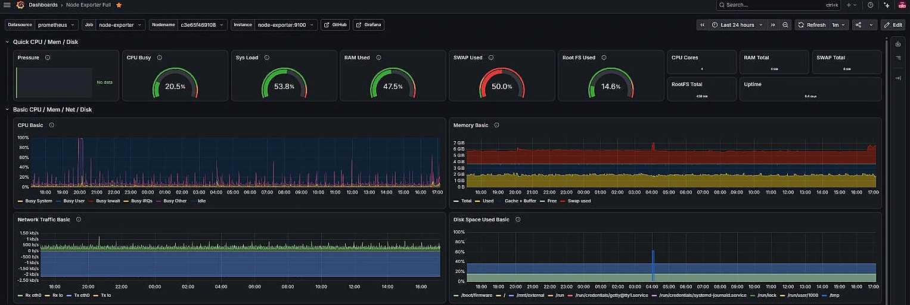
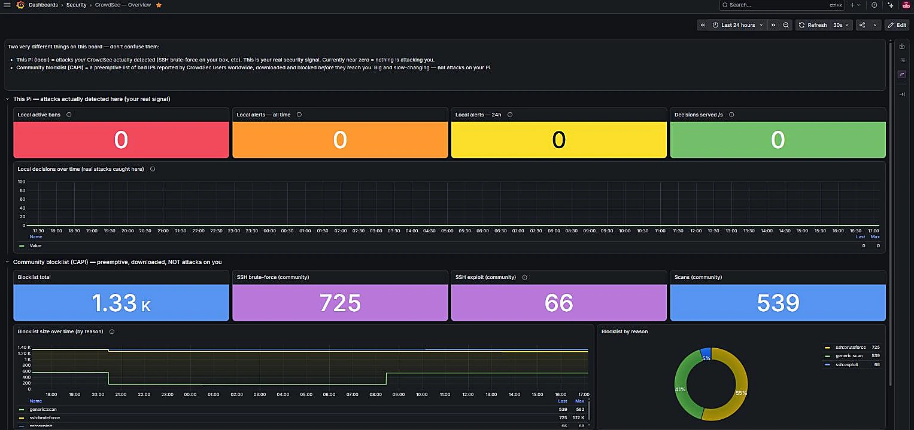
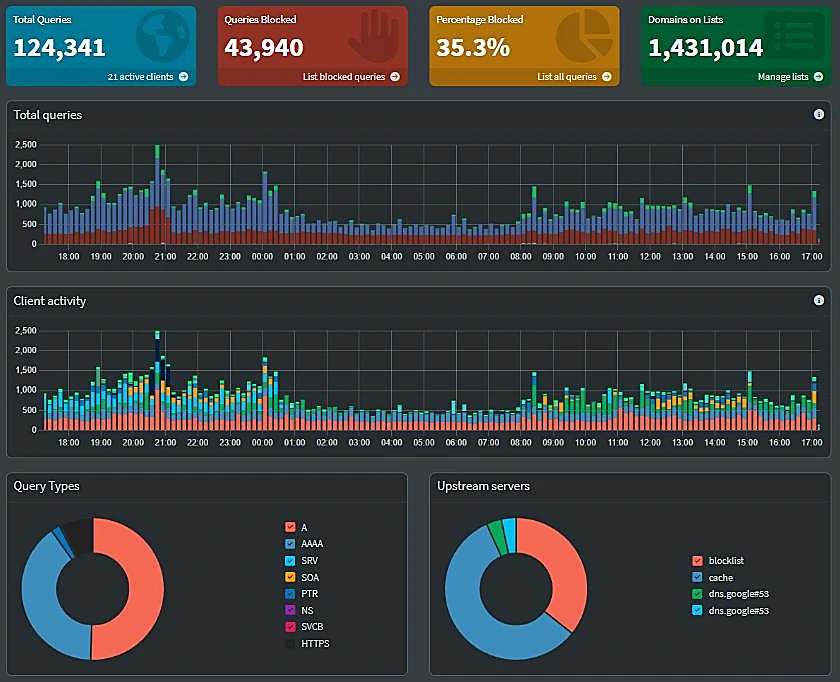

Turning a Raspberry Pi into a Real Piece of Infrastructure
Network-wide ad blocking, intrusion detection, full observability, and workflow automation, running on a single low-power board, with no ports exposed to the internet.

A Raspberry Pi 4 sounds like a toy. Mine runs twelve production services around the clock: ad blocking for every device on the network, intrusion detection, metrics and logs from every container it hosts, automated workflows, and secure remote access, without a single port forwarded on the router.
What it does
Five real jobs, running on one board:
- Network-wide ad blocking: Pi-hole sits as the DNS resolver for every device on the network, so ads and trackers get filtered out before they even load, on phones, laptops, and smart TVs alike, with no per-device extensions needed.
- Intrusion detection: CrowdSec watches logs for attack patterns and automatically blocks offending IPs at the firewall, backed by a crowdsourced threat-intelligence feed.
-
Full observability: every container and the host itself report metrics
into Prometheus, logs into Loki, and both get visualized
in Grafana dashboards, with an uptime/latency prober (
blackbox-exporter) checking that the important services are actually reachable. - Workflow automation: n8n handles the "if this happens, do that" glue work that would otherwise be a pile of cron scripts, including a daily crucial-alerts digest email (details below).
- Secure remote access: Tailscale creates a private mesh network back to the Pi, so I can reach dashboards and services from anywhere without opening a single port on the home router. The attack surface from the internet is effectively zero.
How it's put together
The whole stack is defined in one Docker Compose file: twelve containers, each doing one job, wired together with a shared metrics and logging pipeline:
| Layer | Tools | Job |
|---|---|---|
| Edge / security | Pi-hole, CrowdSec, nftables/iptables | DNS filtering, blocking bad actors |
| Collection | node-exporter, cAdvisor, promtail, pihole-exporter | Pull metrics/logs from host + containers |
| Storage & query | Prometheus, Loki | 30-day metric retention, log aggregation |
| Visualization | Grafana, blackbox-exporter | Dashboards, uptime checks |
| Automation & ops | n8n, Portainer | Workflows, container management |
| Access | Tailscale | Zero-exposure remote access |
Anything with a web UI that doesn't have its own login screen (Grafana, Prometheus,
Loki, Portainer, blackbox-exporter) is deliberately bound to 127.0.0.1
only. Pi-hole's DNS and admin UI are the only things intentionally open to the local
network, because that's the one service whose entire job requires it. Those loopback
ports are then republished over HTTPS to just my Tailscale devices with
tailscale serve: same containers, same loopback bind, no LAN exposure,
reachable from anywhere on the tailnet at the box's own hostname.
The daily digest workflow
There's no Alertmanager in this stack, so nothing pre-triages a failure into a fired alert. Instead an n8n workflow runs every 24 hours and reads raw state directly from each source:
| Source | What it reads |
|---|---|
| CrowdSec | Currently active IP bans |
| Prometheus | Any target reporting up == 0, and any blackbox probe reporting probe_success == 0 |
| Loki | A 24h count of error|critical|fatal lines, excluding Loki's own query-cancellation noise so churn doesn't drown out real errors |
| cAdvisor | Containers that (re)started in 24h, which catches a crash-and-recover that an instant up == 0 query would miss |
| node-exporter | Disk free, memory available, swap used, CPU temperature |
| Pi-hole | Whether ad-blocking is actually enabled, the one failure mode nothing else would flag, since DNS keeps resolving fine |
Everything is merged and handed to an LLM with explicit grading rules: active bans, down targets, probe failures, high disk or temperature, or ad-blocking disabled all grade CRUCIAL; one-off restarts grade MEDIUM; a clean day still grades INFO. The grade goes in the subject line, so the inbox list is the triage view.
0 TRIGGER : n8n fires the workflow on a fixed schedule
schedule node runs the pipeline once a day. No webhook, nothing inbound: the Pi reaches out to each service itself.run six collectors in parallel, each hits one service on the docker network, read-only1 COLLECT : read raw state from six sources · no model involved yet
crowdsec:8080: currently active IP-ban decisions.prometheus:9090: any up == 0 target and any probe_success == 0 blackbox probe.loki:3100: 24h count of error|critical|fatal lines, its own query-cancel noise excluded.{ bans:0, targets_down:0, probes_failed:0, errors_24h:N,
restarts:[...], disk_free, mem_avail, swap, cpu_temp, blocking:true }2 MERGE & GRADE : one model call, and its only job is to grade
{ grade: "CRUCIAL" | "MEDIUM" | "INFO", subject, body }3 DELIVER : the inbox becomes the triage view
One known gap is stated rather than hidden: CrowdSec has no Pi-hole/dnsmasq parser installed,
so 100% of the ~80k Pi-hole log lines it sees daily fail to parse. That counter is reported as
a lifetime total, not a 24h delta. An increase() over a counter with no clean
reset window produced a wildly inflated number the first time this ran.
The dashboards behind the digest
The digest is deliberately the thing I read every day so I don't have to open these. But the same sources are all graphed, and the boards are where a flagged day actually gets diagnosed. All three are bound to loopback and reached only over Tailscale.



Challenges & what I'd do differently
Audit what's actually running before adding more
An earlier setup (OpenObserve + Vector) had been layered on top of the existing Prometheus/Grafana/Loki pipeline, duplicating exactly the same metrics and logs through a second path, and the OpenObserve build in use was a pre-release (v0.14.1-rc1) with far less track record than the tools it duplicated. Removing it dropped load average from 2.97 to roughly 1.0–1.6 and freed over half a gigabyte of swap: a bigger win than any tuning would have delivered.
"It's just the LAN" is not a security boundary
Grafana, Prometheus, Loki and Portainer were bound to 0.0.0.0, and the first two have no login screen at all, so metrics, logs and container controls sat open to any device that joined the Wi-Fi. Everything is now bound to 127.0.0.1 and reached over Tailscale, except Pi-hole's exporter, which runs host-network and needed iptables rules instead.
"Up" isn't the same as "correct"
Prometheus reported the Pi-hole exporter as scraping fine while every value it returned was zero: no extra_hosts entry, so host.docker.internal never resolved, and an admin password that had drifted from .env. A scrape target can report healthy while every number it returns is garbage.
What's next
Still on the bench:
- Pin container image versions instead of tracking
:latest, so a bad upstream release can't surprise me, plus update notifications via Diun. - Automated, scheduled backups of Docker volumes, Pi-hole config, and dashboards. Right now they only exist on one disk.
- Turn off the desktop GUI that's still enabled but unused, now that everything is managed headlessly.
- Confirm SSH is locked to key-only authentication.
- Put the 400+ free gigabytes of storage to work as a proper NAS (Samba, Syncthing, or Immich are the leading candidates).